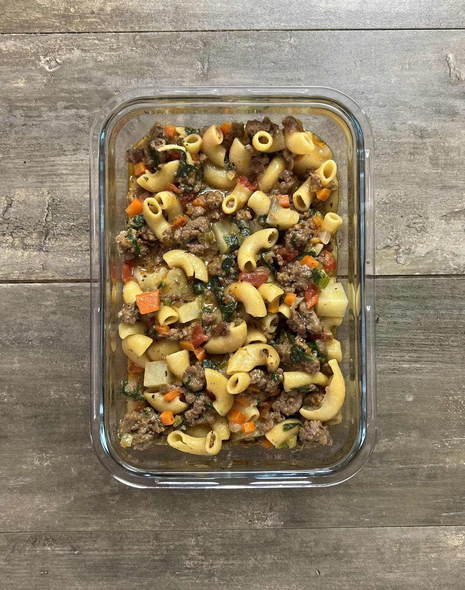

Hambulker Helper

This HamBULKer Helper is a weight gain friendly meal prep with over 1,000 calories per dish to help you easily get in the energy you need to grow muscle. A combination of pasta, beef, potatoes and cheese make up the bulk of the calories but this meal still includes a decent serving of vegetables too.
Nutritional Info per 1/5
- 1000 Calories
- 94g Carbs | 62g Protein | 42g Fat
Ingredients
- 2 lbs (908 g) ground beef 85/15
- 1 medium (200 g) onion
- 4 medium (227 g) carrots
- 4 stalks (112 g) celery
- 3 medium (500 g) potatoes
- 12 oz (340 g) elbow pasta
- 14.5 oz (411 g) petite diced tomatoes
- 6 oz (170 g) spinach
- 1 tbsp (15 g) minced garlic
- 2 cups (480 g) 2% milk
- 3 cups (720 g) chicken broth
- 1 cup (112 g) shredded cheddar cheese
- ½ cup (60 g) grated parmesan cheese
- ¼ cup (68 g) ketchup
- 1 tbsp (3 g) dried basil
- 1 tsbp (6 g) paprika
- salt and pepper to taste
Instructions
- In a large stock pot over medium high heat, add the beef and allow it to brown and the fat to render off.
- Once browned, remove it from the pot, keeping all of the fat that was rendered off inside the pot. This will be used to cook the vegetables.
- While the beef is cooking, wash and cut the onion, carrots, and celery into a small dice of roughly the same size. Grate the garlic. Cut the potatoes into a medium dice of about ½" cubes. Roughly chop the spinach into smaller pieces.
- Once the beef has finished and only the fat remains left in the pot, add in the onions, carrots, celery, and garlic. Season lightly with salt to encourage the water to come out quicker. Allow this to brown and soften for 8-10 minutes.
- Once the vegetables have softened, season with 1 each of dried basil and paprika.
- Add in the potatoes, 2 cups of milk, 3 cups of chicken broth, 1 can of petite diced tomatoes, and 12oz of elbow pasta.
- Bring this mixture to a light boil, stirring occasionally then reduce the heat to low, cover, and cook for 10-15 minutes or until the potatoes have softened and the noodles have finished.
- Test the potatoes for doneness by sticking a fork into them. Once they have softened, add in 1 cup of shredded cheddar cheese, ½ cup of grated parmesan cheese, ¼ cup of ketchup, and all of the spinach you chopped earlier
- Mix well to incorporate the cheeses and wilt the spinach. Taste test, season with salt and pepper to adjust flavor as needed
Back to Recipe Index